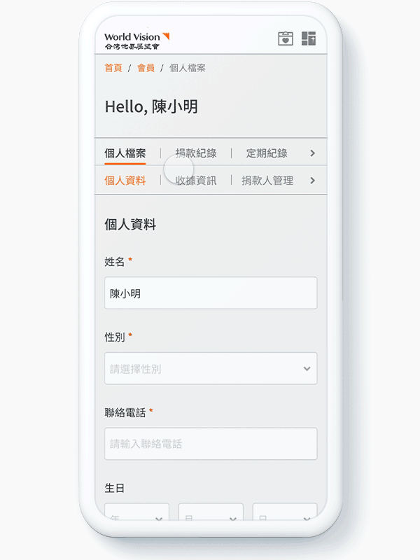
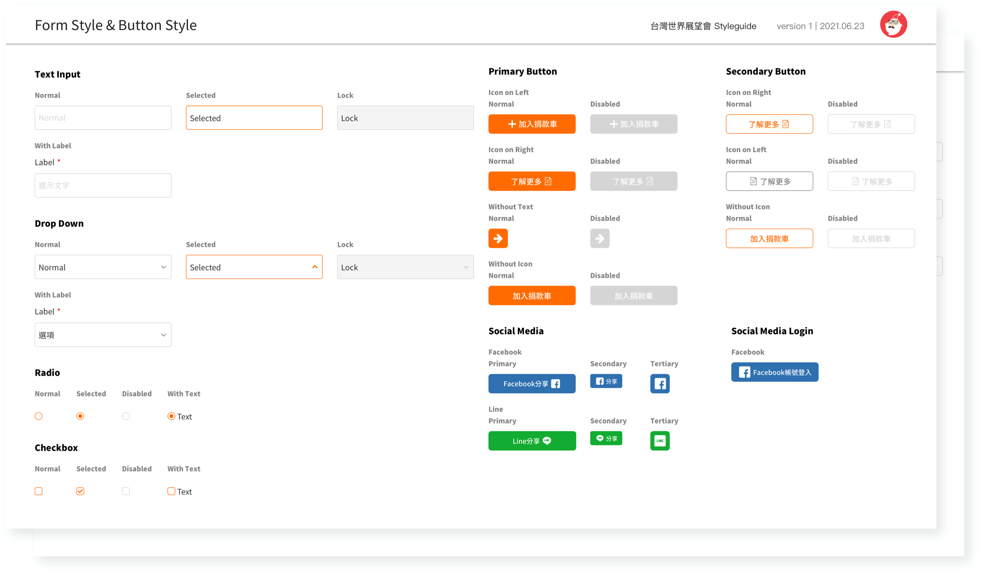

World Vision Taiwan Website
RWD Website
2020-2021
UI.UX Designer
OVERVIEW
World Vision International(WVI) is an international and prominent humanitarian aid organization. It had developed a new website version in three years ago, however, since concerned about cultural differences in user experience, it did not launch in Taiwan site. As a result, the Taiwan site remains designed that provide a frustrating user experience.
With the aim of increasing revenue by refining a variety of user flows on the site, World Vision Taiwan(WVT) cooperated with my team for developing another version that corresponds with the Asian experience.
PROBLEMS WE TRY TO FIGURE OUT...
PHASE TIMELINE
In Iterative development process, our teams organize work in sprints environment. Take two weeks as a sprint and 4 sprints as a phase. Overall, at least 4 phases are included and expected complete circle in 2022.
RESEARCH METHODS
- User Research
- Persona
- Lo-fi Prototyping
- Information Architecture
- User Journey
USER RESEARCH
According to the research from WVT team and our observation, most users are between 40-50 years old, of which women account for the vast majority.
We synthesized findings and were able to conclude users’ expectations/needs of the site:
- Clear project description with attractive images
- Efficiency and convenience donation methods
- Liberty control in the donation process
- Easy sign-up/in
After identifying users' expectations/needs, our team create a user journey and persona which were presented and discussed with the WVT team. These exercises formed a great foundation to move into feature ideation and prioritization.
Then, the main user roles were observed included:
- Members
- (Potential)Project Donor
- (Potential)Child Sponsor
- First-time visitor

User stories and its user flow were created. Related pages and its work were listed too.
SOLUTIONS
Introduce a Drupal 8
Drupal 8 is a content management system which well-known for its flexibility, scalability and security. WVT team are able to edit content easier than ever before, import/outport data from external/internal sources or protect users and insider information.


Flexible sign-in/up
With a view of attracting visitors to become members then turn into donors, they are able to add a project to the donation cart while browsing. Afterward, sign in/up through connect a Facebook account, or the system registers automatically during the check-out process.
Profile
Allowing users to view their donation status/history/detail, profile settings, and manage the other donor profile settings under this account.


Adjustable donation items
Users are able to remove, add, replace a donation project or adjust donation frequency on the cart page.
Design Review

